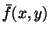
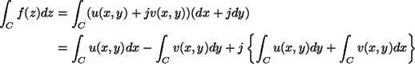

|
You are here : Control System Design - Index | Book Contents | Appendix C | Section C.4 C. Results From Analytic Function TheoryC.4 Functions of a Complex VariableIn the sequel we will let z = x + jy denote a complex variable. Note that z is not the argument in the Z transform, used at other points in this book. Also a function f(z) of a complex variable is equivalent to a function . This will have real and imaginary parts u(x, y) and v(x, y) respectively. We can thus write
Note that we also have  We then see that the previous results are immediately applicable to the real and imaginary parts of integrals of this type. |